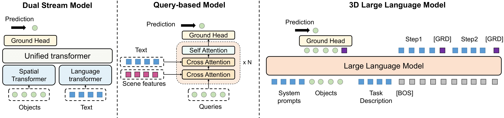

SG3D contains 3D scenes curated from diverse existing datasets of real environments. Harnessing the power of 3D scene graphs and GPT-4, we introduce an automated pipeline to generate tasks. Post-generation, we manually verify the test set data to ensure data quality.
We adapted three state-of-the-art 3D visual grounding models (3D-VisTA, PQ3D, LEO) to the sequential grounding task and evaluated their performance on SG3D. The results show they face significant challenges with task-oriented sequential grounding.

To use the data explorer, first select from the available scenes in the selection bar. The tasks and their corresponding steps will be displayed in the right column. Click on a step to visualize its target object with a red bounding box in the scene. All available objects could be found according to the segmentation visualization. Best viewed on monitors.
Control: Click + Drag = Rotate Ctrl + Drag = Translate Scroll Up/Down = Zoom In/Out
@article{sg3d,
title={Task-oriented Sequential Grounding in 3D Scenes},
author={Zhang, Zhuofan and Zhu, Ziyu and Li, Pengxiang and Liu, Tengyu and Ma, Xiaojian and Chen, Yixin and Jia, Baoxiong and Huang, Siyuan and Li, Qing},
year={2024}
}